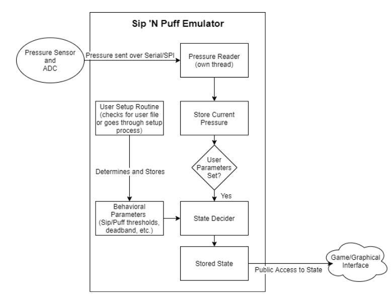

Sip and Puff Training Suite¶
Architecture of Emulator
SnP_Emulator.py¶
The Sip and Puff Emulator.
-
class
SnP_Emulator.SnPState¶ Class for reading and translating pressure values received over SPI to sip and puff states. After instantiating this class, it should have the thread started and the setup method invoked. This class is intended to be used with ADC: MCP3201-CI/P Ex:
snp_state = SnPState() snp_state.start() time.sleep(0.1) snp_state.setup()
-
getPressure()¶ Safe external interface for getting the current pressure value.
-
getState()¶ Interface for getting current state.
-
run()¶ Function ran by thread when ::meth::’start()’ is called. It reads 2 bytes at a time and does bitmath to translate what it reads into the 12-bit number. The bitmath can be determined from the ADC data sheet.
-
setup()¶ Setup routine. This should always be called after class instantiation and thread starting. It:
Reads in the user profile if told to.
Samples NUM_SAMPLES times to determine an average ambient pressure.
Runs through a routine to set all of the sip/puff thresholds.
Allows manual changing of calculated parameters.
Goes through a test to determine ramp times.
Prompts user to save the user profile.
-